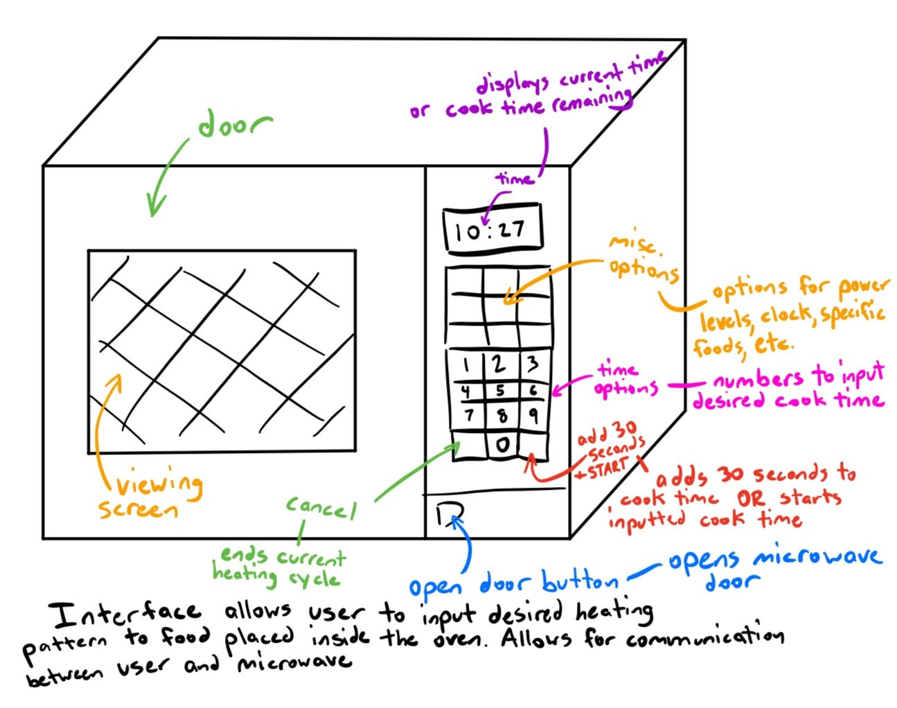

Sketch

Observation
- How do you rate the ease of use with the microwave on a scale of 1-6 with 1 being the hardest to use/understand and 6 being the easiest? Why?
- All answered 5. The buttons are worn down, so it’s hard to read the labels. Microwave beeps too many times when it’s finished. Didn’t know you could add 4 minutes directly
- Only know how to use one button, the “add 30 seconds” button. There are marks on the button from other people using it many times, and so it’s easy to know which button to press
- Is there anything you liked about the interface?
- The “add 30 seconds” button is useful
- Everything’s clearly labeled (except the buttons that are worn out)
- Did you have any difficulties with the interface?
- Finger marks help to distinguish which buttons to press. Maybe if they weren’t there, it would be more difficult to know what to do to make it work
- Difficult reading the buttons with worn labels
- Is there anything you wish the interface had that would make it easier to use/interact with?
- Very pronounced add 30 seconds button.
- Ability to pre-save one-and-a-half-minute cook time because often used
- Was the product navigation as you expected?
- Yes
- It adds 30 seconds when the “add 30 seconds” button is pressed
Main accessibility issue: Overused buttons have the plastic fraying, making it hard to see what the labels say. This may make the microwave harder to use for first-time/infrequent users
Person 1:
- Presses start button a lot, multiple times even though microwave already started
- Uses with relative ease, easily finds right button (number to press)
- Doesn’t come pick up food when done
Person 2:
- Opens door, leaves it open while pouring milk
- Presses one minute button before adding 30 seconds
- Doesn’t use start button, so microwave starts while still adding time
- Stands by microwave while waiting for milk to heat
- Presses cancel button
Person 3:
- Hand hovers over back and forth between buttons
- Then pressed a lot of buttons
- Eventually reset to starting point
- Difficulty finding start button
- First set cook time, power level, then press start
- Pressed cancel button
- Cleared pretty quickly
- Set clock on microwave relatively quickly in contrast
Personas